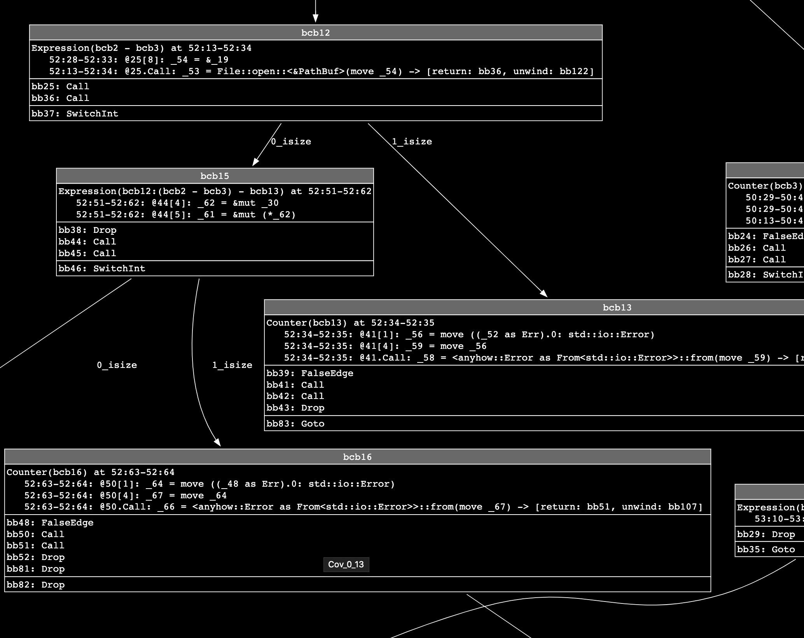
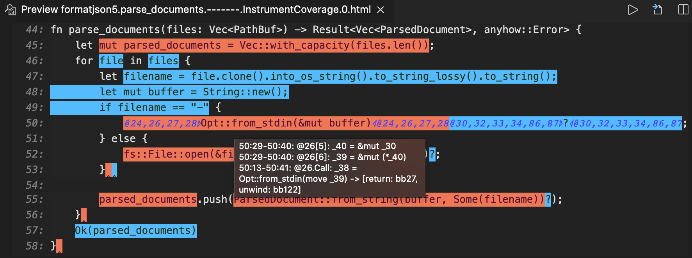

LLVM Source-Based Code Coverage
- Rust symbol mangling
- Components of LLVM Coverage Instrumentation in
rustc - Testing LLVM Coverage
- Implementation Details of the
InstrumentCoverageMIR Pass
rustc supports detailed source-based code and test coverage analysis
with a command line option (-C instrument-coverage) that instruments Rust
libraries and binaries with additional instructions and data, at compile time.
The coverage instrumentation injects calls to the LLVM intrinsic instruction
llvm.instrprof.increment at code branches
(based on a MIR-based control flow analysis), and LLVM converts these to
instructions that increment static counters, when executed. The LLVM coverage
instrumentation also requires a Coverage Map that encodes source metadata,
mapping counter IDs--directly and indirectly--to the file locations (with
start and end line and column).
Rust libraries, with or without coverage instrumentation, can be linked into
instrumented binaries. When the program is executed and cleanly terminates,
LLVM libraries write the final counter values to a file (default.profraw or
a custom file set through environment variable LLVM_PROFILE_FILE).
Developers use existing LLVM coverage analysis tools to decode .profraw
files, with corresponding Coverage Maps (from matching binaries that produced
them), and generate various reports for analysis, for example:

Detailed instructions and examples are documented in the Rustc Book.
Rust symbol mangling
-C instrument-coverage automatically enables Rust symbol mangling v0 (as
if the user specified -C symbol-mangling-version=v0 option when invoking
rustc) to ensure consistent and reversible name mangling. This has two
important benefits:
- LLVM coverage tools can analyze coverage over multiple runs, including some changes to source code; so mangled names must be consistent across compilations.
- LLVM coverage reports can report coverage by function, and even separates out the coverage counts of each unique instantiation of a generic function, if invoked with multiple type substitution variations.
Components of LLVM Coverage Instrumentation in rustc
LLVM Runtime Dependency
Coverage data is only generated by running the executable Rust program. rustc
statically links coverage-instrumented binaries with LLVM runtime code
(compiler-rt) that implements program hooks
(such as an exit hook) to write the counter values to the .profraw file.
In the rustc source tree, library/profiler_builtins bundles the LLVM
compiler-rt code into a Rust library crate. (When building rustc, the
profiler_builtins library is only included when profiler = true is set
in rustc's config.toml.)
When compiling with -C instrument-coverage,
CrateLoader::postprocess() dynamically loads the
profiler_builtins library by calling inject_profiler_runtime().
MIR Pass: InstrumentCoverage
Coverage instrumentation is performed on the MIR with a MIR pass
called InstrumentCoverage. This MIR pass analyzes
the control flow graph (CFG)--represented by MIR BasicBlocks--to identify
code branches, and injects additional Coverage
statements into the BasicBlocks.
A MIR Coverage statement is a virtual instruction that indicates a counter
should be incremented when its adjacent statements are executed, to count
a span of code (CodeRegion). It counts the number of times a
branch is executed, and also specifies the exact location of that code span in
the Rust source code.
Note that many of these Coverage statements will not be converted into
physical counters (or any other executable instructions) in the final binary.
Some of them will be (see CoverageKind::Counter),
but other counters can be computed on the fly, when generating a coverage
report, by mapping a CodeRegion to a
CoverageKind::Expression.
As an example:
#![allow(unused)] fn main() { fn some_func(flag: bool) { // increment Counter(1) ... if flag { // increment Counter(2) ... } else { // count = Expression(1) = Counter(1) - Counter(2) ... } // count = Expression(2) = Counter(1) + Zero // or, alternatively, Expression(2) = Counter(2) + Expression(1) ... } }
In this example, four contiguous code regions are counted while only incrementing two counters.
CFG analysis is used to not only determine where the branches are, for
conditional expressions like if, else, match, and loop, but also to
determine where expressions can be used in place of physical counters.
The advantages of optimizing coverage through expressions are more pronounced
with loops. Loops generally include at least one conditional branch that
determines when to break out of a loop (a while condition, or an if or
match with a break). In MIR, this is typically lowered to a SwitchInt,
with one branch to stay in the loop, and another branch to break out of the
loop. The branch that breaks out will almost always execute less often,
so InstrumentCoverage chooses to add a Counter to that branch, and an
Expression(continue) = Counter(loop) - Counter(break) to the branch that
continues.
The InstrumentCoverage MIR pass is documented in
more detail below.
Counter Injection and Coverage Map Pre-staging
When the compiler enters the Codegen phase, with a
coverage-enabled MIR, codegen_statement() converts each
MIR Statement into some backend-specific action or instruction.
codegen_statement() forwards Coverage statements to
codegen_coverage():
#![allow(unused)] fn main() { pub fn codegen_statement(&mut self, mut bx: Bx, statement: &mir::Statement<'tcx>) -> Bx { ... match statement.kind { ... mir::StatementKind::Coverage(box ref coverage) => { self.codegen_coverage(&mut bx, coverage.clone(), statement.source_info.scope); bx } }
codegen_coverage() handles each CoverageKind as follows:
- For all
CoverageKinds, Coverage data (counter ID, expression equation and ID, and code regions) are passed to the backend'sBuilder, to populate data structures that will be used to generate the crate's "Coverage Map". (See theFunctionCoveragestruct.) - For
CoverageKind::Counters, an instruction is injected in the backend IR to increment the physical counter, by calling theBuilderMethodinstrprof_increment().
#![allow(unused)] fn main() { pub fn codegen_coverage(&self, bx: &mut Bx, coverage: Coverage, scope: SourceScope) { ... let instance = ... // the scoped instance (current or inlined function) let Coverage { kind, code_region } = coverage; match kind { CoverageKind::Counter { function_source_hash, id } => { ... bx.add_coverage_counter(instance, id, code_region); ... bx.instrprof_increment(fn_name, hash, num_counters, index); } CoverageKind::Expression { id, lhs, op, rhs } => { bx.add_coverage_counter_expression(instance, id, lhs, op, rhs, code_region); } CoverageKind::Unreachable => { bx.add_coverage_unreachable( instance, code_region.expect(... }
The function name
instrprof_increment()is taken from the LLVM intrinsic call of the same name (llvm.instrprof.increment), and uses the same arguments and types; but note that, up to and through this stage (even though modeled after LLVM's implementation for code coverage instrumentation), the data and instructions are not strictly LLVM-specific.But since LLVM is the only Rust-supported backend with the tooling to process this form of coverage instrumentation, the backend for
Coveragestatements is only implemented for LLVM, at this time.
Coverage Map Generation
With the instructions to increment counters now implemented in LLVM IR, the last remaining step is to inject the LLVM IR variables that hold the static data for the coverage map.
rustc_codegen_llvm's compile_codegen_unit() calls
coverageinfo_finalize(),
which delegates its implementation to the
rustc_codegen_llvm::coverageinfo::mapgen module.
For each function Instance (code-generated from MIR, including multiple
instances of the same MIR for generic functions that have different type
substitution combinations), mapgen's finalize() method queries the
Instance-associated FunctionCoverage for its Counters, Expressions,
and CodeRegions; and calls LLVM codegen APIs to generate
properly-configured variables in LLVM IR, according to very specific
details of the LLVM Coverage Mapping Format
(Version 6).1
The Rust compiler (as of Jan 2023) supports LLVM Coverage Mapping Format 6. It was introduced in LLVM 13, which is, as of this writing, the minimum supported LLVM version. The Rust compiler will automatically use the most up-to-date coverage mapping format version that is compatible with the compiler's built-in version of LLVM.
#![allow(unused)] fn main() { pub fn finalize<'ll, 'tcx>(cx: &CodegenCx<'ll, 'tcx>) { ... if !tcx.sess.instrument_coverage_except_unused_functions() { add_unused_functions(cx); } let mut function_coverage_map = match cx.coverage_context() { Some(ctx) => ctx.take_function_coverage_map(), None => return, }; ... let mut mapgen = CoverageMapGenerator::new(); for (instance, function_coverage) in function_coverage_map { ... let coverage_mapping_buffer = llvm::build_byte_buffer(|coverage_mapping_buffer| { mapgen.write_coverage_mapping(expressions, counter_regions, coverage_mapping_buffer); }); }
code snippet trimmed for brevity
One notable first step performed by mapgen::finalize() is the call to
add_unused_functions():
When finalizing the coverage map, FunctionCoverage only has the CodeRegions
and counters for the functions that went through codegen; such as public
functions and "used" functions (functions referenced by other "used" or public
items). Any other functions (considered unused) were still parsed and processed
through the MIR stage.
The set of unused functions is computed via the set difference of all MIR
DefIds (tcx query mir_keys) minus the codegenned DefIds (tcx query
codegened_and_inlined_items). add_unused_functions() computes the set of
unused functions, queries the tcx for the previously-computed CodeRegions,
for each unused MIR, synthesizes an LLVM function (with no internal statements,
since it will not be called), and adds a new FunctionCoverage, with
Unreachable code regions.
Testing LLVM Coverage
Coverage instrumentation in the MIR is validated by a mir-opt test:
instrument-coverage.
More complete testing of end-to-end coverage instrumentation and reports are
done in the run-make-fulldeps tests, with sample Rust programs (to be
instrumented) in the coverage directory, and the
actual tests and expected results in coverage-reports.
Finally, the coverage-llvmir test compares compiles a simple Rust program
with -C instrument-coverage and compares the compiled program's LLVM IR to
expected LLVM IR instructions and structured data for a coverage-enabled
program, including various checks for Coverage Map-related metadata and the LLVM
intrinsic calls to increment the runtime counters.
Expected results for both the mir-opt tests and the coverage* tests under
run-make-fulldeps can be refreshed by running:
$ ./x.py test mir-opt --bless
$ ./x.py test tests/run-make-fulldeps/coverage --bless
Implementation Details of the InstrumentCoverage MIR Pass
The bulk of the implementation of the InstrumentCoverage MIR pass is performed
by the Instrumentor. For each MIR (each non-const, non-inlined
function, generic, or closure), the Instrumentor's constructor prepares a
CoverageGraph and then executes
inject_counters().
#![allow(unused)] fn main() { Instrumentor::new(&self.name(), tcx, mir_body).inject_counters(); }
The CoverageGraph is a coverage-specific simplification of the MIR control
flow graph (CFG). Its nodes are BasicCoverageBlocks, which
encompass one or more sequentially-executed MIR BasicBlocks
(with no internal branching), plus a CoverageKind counter (to
be added, via coverage analysis), and an optional set of additional counters
to count incoming edges (if there are more than one).
The Instrumentor's inject_counters() uses the CoverageGraph to
compute the best places to inject coverage counters, as MIR Statements,
with the following steps:
- Depending on the debugging configurations in
rustc's,config.toml, andrustccommand line flags, various debugging features may be enabled to enhancedebug!()messages in logs, and to generate various "dump" files, to help developers understand the MIR transformation process for coverage. Most of the debugging features are implemented in thedebugsub-module. generate_coverage_spans()computes the minimum set of distinct, non-branching code regions, from the MIR. TheseCoverageSpans represent a span of code that must be counted.make_bcb_counters()generatesCoverageKind::Counters andCoverageKind::Expressions for eachCoverageSpan, plus additionalintermediate_expressions2, not associated with anyCodeRegion, but are required to compute a finalExpressionvalue for aCodeRegion.- Inject the new counters into the MIR, as new
StatementKind::Coveragestatements. This is done by three distinct functions:inject_coverage_span_counters()inject_indirect_counters()inject_intermediate_expression(), called for each intermediate expression returned frommake_bcb_counters()
Intermediate expressions are sometimes required
because Expressions are limited to binary additions or subtractions. For
example, A + (B - C) might represent an Expression count computed from three
other counters, A, B, and C, but computing that value requires an
intermediate expression for B - C.
The CoverageGraph
The CoverageGraph is derived from the MIR (mir::Body).
#![allow(unused)] fn main() { let basic_coverage_blocks = CoverageGraph::from_mir(mir_body); }
Like mir::Body, the CoverageGraph is also a
DirectedGraph. Both graphs represent the function's
fundamental control flow, with many of the same
graph traits, supporting start_node(), num_nodes(),
successors(), predecessors(), and is_dominated_by().
For anyone that knows how to work with the MIR, as a CFG, the
CoverageGraph will be familiar, and can be used in much the same way.
The nodes of the CoverageGraph are BasicCoverageBlocks (BCBs), which
index into an IndexVec of BasicCoverageBlockData. This is analogous
to the MIR CFG of BasicBlocks that index BasicBlockData.
Each BasicCoverageBlockData captures one or more MIR BasicBlocks,
exclusively, and represents the maximal-length sequence of BasicBlocks
without conditional branches.
compute_basic_coverage_blocks() builds the
CoverageGraph as a coverage-specific simplification of the MIR CFG. In
contrast with the SimplifyCfg MIR pass, this step does
not alter the MIR itself, because the CoverageGraph aggressively simplifies
the CFG, and ignores nodes that are not relevant to coverage. For example:
- The BCB CFG ignores (excludes) branches considered not relevant
to the current coverage solution. It excludes unwind-related code3
that is injected by the Rust compiler but has no physical source
code to count, which allows a
Call-terminated BasicBlock to be merged with its successor, within a single BCB. - A
Goto-terminatedBasicBlockcan be merged with its successor as long as it has the only incoming edge to the successorBasicBlock. - Some BasicBlock terminators support Rust-specific concerns--like
borrow-checking--that are not relevant to coverage analysis.
FalseUnwind, for example, can be treated the same as aGoto(potentially merged with its successor into the same BCB).
(Note, however, that Issue #78544 considers
providing future support for coverage of programs that intentionally
panic, as an option, with some non-trivial cost.)
The BCB CFG is critical to simplifying the coverage analysis by ensuring graph path-based
queries (is_dominated_by(), predecessors, successors, etc.) have branch (control flow)
significance.
To visualize the CoverageGraph, you can generate a graphviz *.dot
file with the following rustc flags:4
This image also applies -Z graphviz-dark-mode, to
produce a Graphviz document with "dark mode" styling. If you use a dark mode or
theme in your development environment, you will probably want to use this
option so you can review the graphviz output without straining your vision.
$ rustc -C instrument-coverage -Z dump-mir=InstrumentCoverage \
-Z dump-mir-graphviz some_rust_source.rs
The -Z dump-mir flag requests MIR debugging
output (generating *.mir files, by default).
-Z dump-mir-graphviz additionally generates *.dot files.
-Z dump-mir=InstrumentCoverage restricts these files to the
InstrumentCoverage pass. All files are written to the ./mir_dump/
directory, by default.
Files with names ending in .-------.InstrumentCoverage.0.dot contain the
graphviz representations of a CoverageGraph (one for each MIR, that is,
for each function and closure):

This image shows each BasicCoverageBlock as a rectangular node, with
directional edges (the arrows) leading from each node to its successors().
The nodes contain information in sections:
- The gray header has a label showing the BCB ID (or index for looking up
its
BasicCoverageBlockData). - The first content section shows the assigned
CounterorExpressionfor each contiguous section of code. (There may be more than oneExpressionincremented by the sameCounterfor noncontiguous sections of code representing the same sequential actions.) Note the code is represented by the line and column ranges (for example:52:28-52:33, representing the original source line 52, for columns 28-33). These are followed by the MIRStatementorTerminatorrepresented by that source range. (How these coverage regions are determined is discussed in the following section.) - The final section(s) show the MIR
BasicBlocks (by ID/index and itsTerminatorKind) contained in this BCB. The last BCB is separated out because itssuccessors()determine the edges leading out of the BCB, and into theleading_bb()(firstBasicBlock) of each successor BCB.
Note, to find the BasicCoverageBlock from a final BCB Terminator's
successor BasicBlock, there is an index and helper
function--bcb_from_bb()--to look up a BasicCoverageBlock from
any contained BasicBlock.
CoverageSpans
The struct CoverageSpans builds and refines a final set of
CoverageSpans, each representing the largest contiguous Span
of source within a single BCB. By definition--since each Span falls within a
BCB, the Span is also non-branching; so if any code in that Span has executed,
all code in the Span will have executed, the same number of times.
CoverageSpans::generate_coverage_spans() constructs
an initial set of CoverageSpans from the Spans associated with each MIR
Statement and Terminator.
The final stage of generate_coverage_spans() is handled by
to_refined_spans(), which iterates through the CoverageSpans,
merges and de-duplicates them, and returns an optimal, minimal set of CoverageSpans
that can be used to assign coverage Counters or Expressions, one-for-one.
An visual, interactive representation of the final CoverageSpans can be
generated with the following rustc flags:
$ rustc -C instrument-coverage -Z dump-mir=InstrumentCoverage \
-Z dump-mir-spanview some_rust_source.rs
These flags request Spanview output for the InstrumentCoverage pass, and the
resulting files (one for each MIR, that is, for each function or closure) can be
found in the mir_dump directory (by default), with the extension:
.-------.InstrumentCoverage.0.html.

The image above shows one such example. The orange and blue backgrounds
highlight alternating CoverageSpans from the refined set. Hovering over a
line expands the output on that line to show the MIR BasicBlock IDs covered
by each CoverageSpan. While hovering, the CoverageSpan under the pointer
also has a tooltip block of text, showing even more detail, including the
MIR Statements and Terminators contributing to the CoverageSpan, and
their individual Spans (which should be encapsulated within the code region
of the refined CoverageSpan)
make_bcb_counters()
make_bcb_counters() traverses the CoverageGraph and adds a
Counter or Expression to every BCB. It uses Control Flow Analysis
to determine where an Expression can be used in place of a Counter.
Expressions have no runtime overhead, so if a viable expression (adding or
subtracting two other counters or expressions) can compute the same result as
an embedded counter, an Expression is preferred.
TraverseCoverageGraphWithLoops
provides a traversal order that ensures all BasicCoverageBlock nodes in a
loop are visited before visiting any node outside that loop. The traversal
state includes a context_stack, with the current loop's context information
(if in a loop), as well as context for nested loops.
Within loops, nodes with multiple outgoing edges (generally speaking, these
are BCBs terminated in a SwitchInt) can be optimized when at least one
branch exits the loop and at least one branch stays within the loop. (For an
if or while, there are only two branches, but a match may have more.)
A branch that does not exit the loop should be counted by Expression, if
possible. Note that some situations require assigning counters to BCBs before
they are visited by traversal, so the counter_kind (CoverageKind for
a Counter or Expression) may have already been assigned, in which case
one of the other branches should get the Expression.
For a node with more than two branches (such as for more than two
match patterns), only one branch can be optimized by Expression. All
others require a Counter (unless its BCB counter_kind was previously
assigned).
A branch expression is derived from the equation:
Counter(branching_node) = SUM(Counter(branches))
It's important to
be aware that the branches in this equation are the outgoing edges
from the branching_node, but a branch's target node may have other
incoming edges. Given the following graph, for example, the count for
B is the sum of its two incoming edges:

In this situation, BCB node B may require an edge counter for its
"edge from A", and that edge might be computed from an Expression,
Counter(A) - Counter(C). But an expression for the BCB node B
would be the sum of all incoming edges:
Expression((Counter(A) - Counter(C)) + SUM(Counter(remaining_edges)))
Note that this is only one possible configuration. The actual choice
of Counter vs. Expression also depends on the order of counter
assignments, and whether a BCB or incoming edge counter already has
its Counter or Expression.
Injecting counters into a MIR BasicBlock
With the refined CoverageSpans, and after all Counters and Expressions are
created, the final step is to inject the StatementKind::Coverage statements
into the MIR. There are three distinct sources, handled by the following
functions:
inject_coverage_span_counters()injects the counter from eachCoverageSpan's BCB.inject_indirect_counters()injects counters for any BCB not assigned to aCoverageSpan, and for all edge counters. These counters don't haveCoverageSpans.inject_intermediate_expression()injects the intermediate expressions returned frommake_bcb_counters(). These counters aren't associated with any BCB, edge, orCoverageSpan.
These three functions inject the Coverage statements into the MIR.
Counters and Expressions with CoverageSpans add Coverage statements
to a corresponding BasicBlock, with a CodeRegion computed from the
refined Span and current SourceMap.
All other Coverage statements have a CodeRegion of None, but they
still must be injected because they contribute to other Expressions.
Finally, edge's with a CoverageKind::Counter require a new BasicBlock,
so the counter is only incremented when traversing the branch edge.
Additional Debugging Support
See the
crate documentation for rustc_mir::transform::coverage::debug
for a detailed description of the debug output, logging, and configuration options
available to developers working on the InstrumentCoverage pass.